15 Introduction to Phylogenomics
For this chapter’s exercises, if not already performed, you will need to download the chapter’s dataset, decompress the archive, and create and activate the conda environment.
Do this, use wget or right click and save to download this Zenodo archive: 10.5281/zenodo.8413215, and unpack
tar xvf phylogenomics.tar.gz
cd phylogenomics/You can then create the subsequently activate environment with
conda env create -f phylogenomics.yml
conda activate phylogenomicsThere are additional software requirements for this chapter
Please see the relevant chapter section in Before you start before continuing with this chapter.
15.1 Preparation
The data and conda environment .yaml file for this practical session can be downloaded from here: https://doi.org/10.5281/zenodo.6983184. See instructions on page.
Change into the session directory
cd /<path>/<to>/phylogenomics/The data in this folder should contain an alignment (snpAlignment_session5.fasta) and a txt file with the ages of the samples that we are going to be working with in this session (samples.ages.txt)
Load the conda environment.
conda activate phylogenomics15.2 Visualize the sequence alignment
In this practical session, we will be working with an alignment produced as you learned in the practical Genome mapping.
- the alignment is a SNP alignment (it contains only the variable genomic positions, not the full genomes)
- it contains 33 Yersinia pestis sequences and 1 Yersinia pseudotuberculosis sequence which can be used as an outgroup
- in this practical, we will investigate the phylogenetic position of four prehistorical Y. pestis strains that we have recently discovered: KZL002, GZL002, CHC004 and VLI092
We start by exploring the alignment in MEGA. Open the MEGA desktop application by typing mega & in the terminal.
Adding “&” at the end of a command line allows to run a program in the background while letting the terminal accessible. This particularly useful when starting a graphical interface from the terminal.
Then, load the alignment by clicking on File -> Open A File/Session -> Select the snpAlignment_session5.fasta (in the working directory of the session).
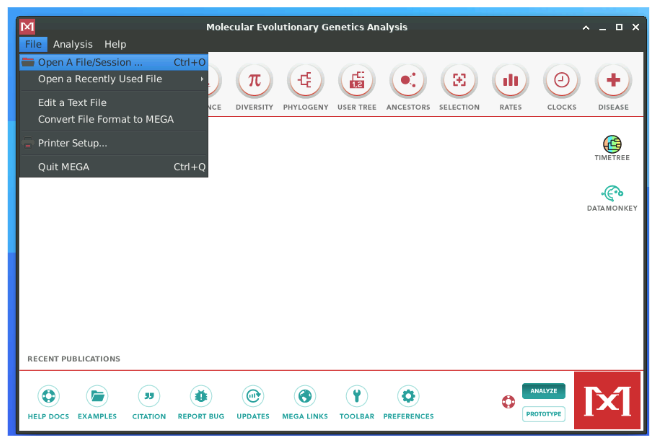
It will you ask what you want to do with the alignment. In MEGA you can also produce an alignment, however, since our sequences are already aligned we will press on Analyze.
Then we will select Nucleotide Sequences since we are working with a DNA alignment. Note that MEGA can also work with Protein Sequences as well as Pairwise Distance Matrix (which we will cover shortly). In the same window, we will change the character for Missing Data to N and click in OK.
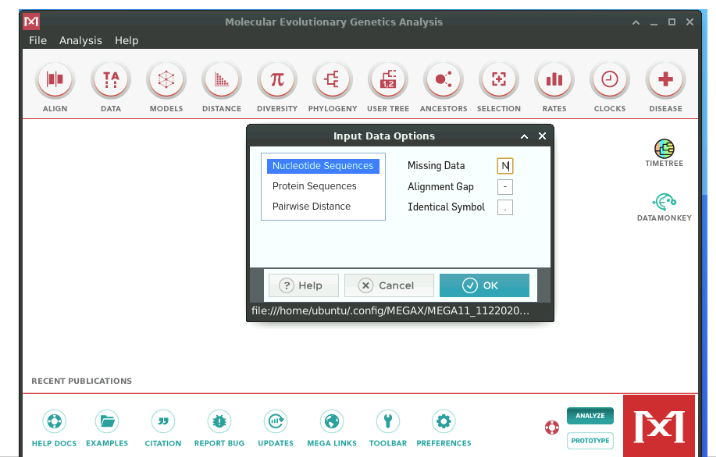
A window would open up asking if our alignment contains protein encoding sequences, and we will select No.
If you had protein encoding sequences, you would have selected Yes. This will allow you to treat different positions with different evolutionary modes depending on their codon position. One can do this to take in account that the third codon position can change to different nucleotides without resulting in a different amino acid, while position one and two of the codon are more restricted.
To explore the alignment, you will then click on the box with TA
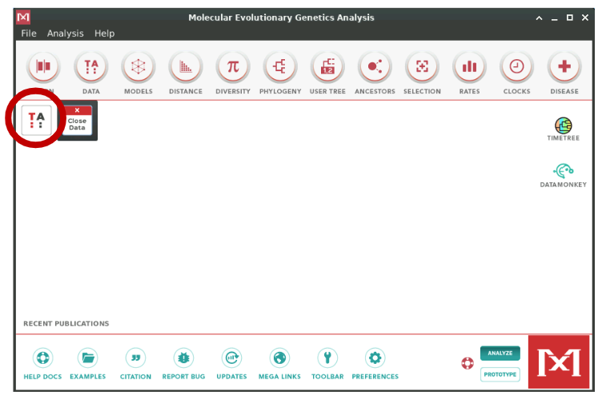
You will see an alignment containing sequences from the bacterial pathogen Yersinia pestis. Within the alignment, we have four sequences of interest (KZL002, GZL002, CHC004 and VLI092) that date between 5000-2000 years Before Present (BP), and we want to know how they relate to the rest of the Yersinia pestis genomes in the alignment.
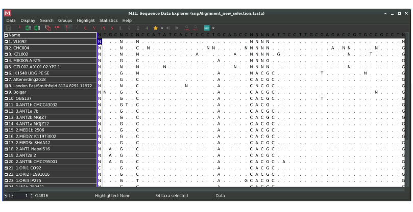
How many sequences are we analysing?
We are analysing 34 sequences.
What are the Ns in the sequences?
They represent positions where we have missing data. We told MEGA to encode missing positions as N
What do you think the dots represent?
The first line is a consensus sequence: it indicates the nucleotide supported by the majority of the sequences in the alignment (90% of the sequences should agree, otherwise an N is displayed)
They represent positions that are the same as the consensus
Once you know this, can you already tell by looking at the alignment which sequence is the most divergent (scroll down)
We can easily see that the last sequence in the alignment (Y. pseudotuberculosis) contains more disagreements to the consensus. This is normal since this is the only genome not belonging to the Y. pestis species: we will use it as an outgroup
15.3 Distance-based phylogeny: Neighbour Joining
The Neighbour Joining (NJ) method is an agglomerative algorithm which can be used to derive a phylogenetic tree from a pairwise distance matrix. In essence, this method will be grouping taxa that have the shortest distance together first, and will be doing this iteratively until all the taxa/sequences included in your alignment have been placed in a tree.
Here are the details of the calculations for a small NJ tree example with 6 taxa:
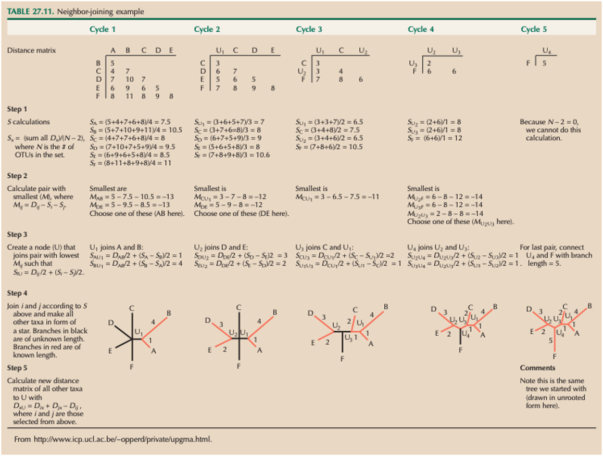
Luckily, you won’t have to do this by hand since MEGA allows you to build a NJ tree. For that go back to MEGA and click on the Phylogeny symbol (toolbar of the main menu window) and then select Construct Neighbour Joining Tree. Type “Yes” when you are asked if you want to use the currently active date. In the window that pop up, you will then chance the Model/Method to p-distance. Then press OK and a window with the calculated phylogenetic tree will pop up.
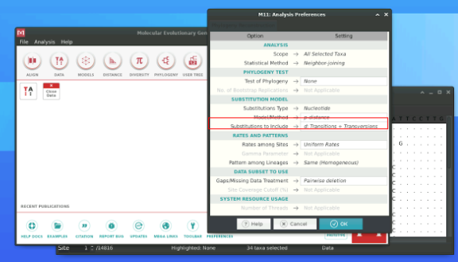
A NJ tree can be built from any type of distances. This includes:
- p-distances (also called raw distances): these are simply the proportion of differences between sequences
- corrected distances: these are based on an underlying substitution model (JC69, K80, GTR…) and account for multiple substitutions at the same sites (which would result in only one visible difference)
- p-distances and corrected distances should be similar when the number of substitutions is low compared to the genome length
note: a “substitution” is a type of mutation in which a nucleotide is replaced by another.
Since the tree is not easily visualised in MEGA, we will export it in newick format (a standard text format for trees) and explore our tree in FigTree. This tool has a better interface for visually manipulating trees and allows us to interact with the phylogenetic tree.
To do that you will click on File, then Export current tree (Newick) and click on Branch Lengths to include those in the newick annotation. When you press OK, a new window with the tree in newick format will pop up and you will then press File -> Save and saved it as NJ_tree.nwk. You can then close the text editor and tree explorer windows (no need to save the session).
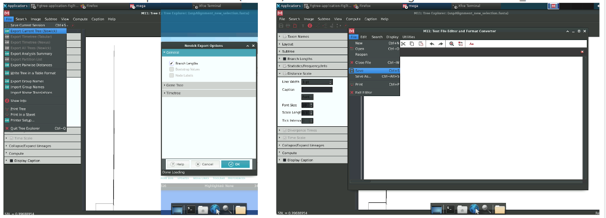
As said above, we will explore own NJ tree in FigTree. Open the software by typing figtree & in the terminal (if you use the same terminal window as the one in which you ran mega, you might have to press enter first). Then, open the NJ tree by clicking on File -> Open and selecting the file with the NJ tree NJ_tree.nwk
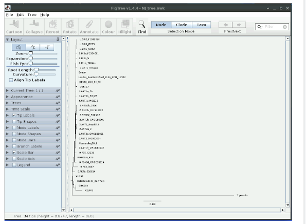
Note that even though a root is displayed by default in FigTree, NJ trees are actually unrooted. We know that Yersinia pseudotuberculosis (labelled here as Y. pseudotuberculosis) is an outgroup to Yersinia pestis. You can reroot the tree by selecting Y.pseudotuberculosis and pressing Reroot.
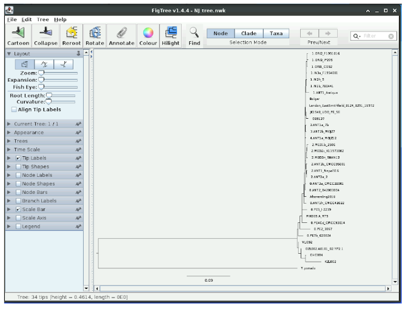
Now we have a rooted tree.
::: {.callout-tip title=“Question” appearance=“simple”}
How much time did the NJ-tree calculation take?
~1 second
How many leaves/tips has our tree?
34, i.e. the number of sequences in our SNP alignment.
Where are our taxa of interest? (KZL002, GZL002, CHC004 and VLI092)
They all fall ancestral to the rest of Yersinia pestis in this tree.
Do they form a monophyletic group (a clade)?
Yes, they form a monophyletic group. We can also say that this group of prehistoric strains form their own lineage.
15.4 Probabilistic methods: Maximum Likelihood and Bayesian inference
These are the most commonly used approach today. In general, probabilistic methods are statistical techniques that are based on models under which the observed data is generated through a stochastic process depending on a set of parameters which we want to estimate. The probability of the data given the model parameters is called the likelihood.
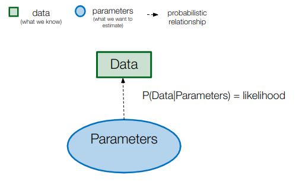
In a phylogenetic probabilistic model, what are the data and what are the parameters?
In a phylogenetic probabilistic model, the data is the sequence alignment and the parameters, are:
- the parameters of the chosen substitution model (substitution rates and base frequencies)
- the phylogenetic tree
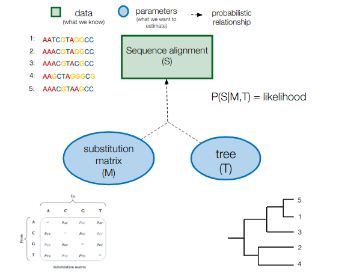
15.5 Maximum likelihood estimation and bootstrapping
One way we can make inferences from a probabilistic model is by finding the combination of parameters which maximises the likelihood. These parameter values are called maximum likelihood (ML) estimates. We are usually not able to compute the likelihood value for all possible combinations of parameters and have to rely on heuristic algorithms to find the maximum likelihood estimates.
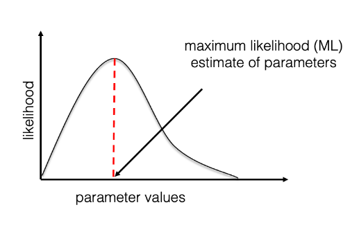
The Maximum likelihood estimates are point estimates, i.e. single parameter values (for example, a tree), which does not allow to measure the associated uncertainty. A classic method to measure the uncertainty in ML trees is bootstrapping, which consists in repeatedly “disturbing” the alignment by masking sites randomly and estimating a tree from each of these bootstrap alignments.
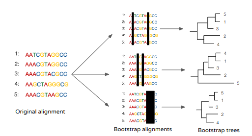
For each clade in the ML tree, a bootstrap support value is computed which corresponds to the proportion of bootstrap trees containing the clade. This gives an indication of how robustly the clade is supported by the data (i.e. whether it holds even after disturbing the dataset). Bootstrapping can be used to measure the topology uncertainty of trees estimated with any inference method.
Bootstrapping can be used to measure uncertainty with any type of inference method, including distance methods
Let’s make our own ML tree!
Here is a command to estimate an ML phylogenetic tree together with bootstraps using RAxML (you may find the list of parameters in the RAxML manual):
raxmlHPC-PTHREADS -m GTRGAMMA -T 3 -f a -x 12345 -p 12345 -N autoMRE -s snpAlignment_session5.fasta -n full_dataset.treHere is the meaning of the chosen parameters:
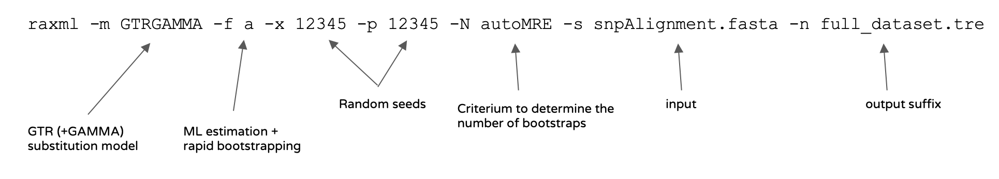
Once the analysis has been completed, you can open the tree using Figtree (RAxML_bipartitions.full_dataset.tre file, change “label” to “bootstrap support” at the prompt).
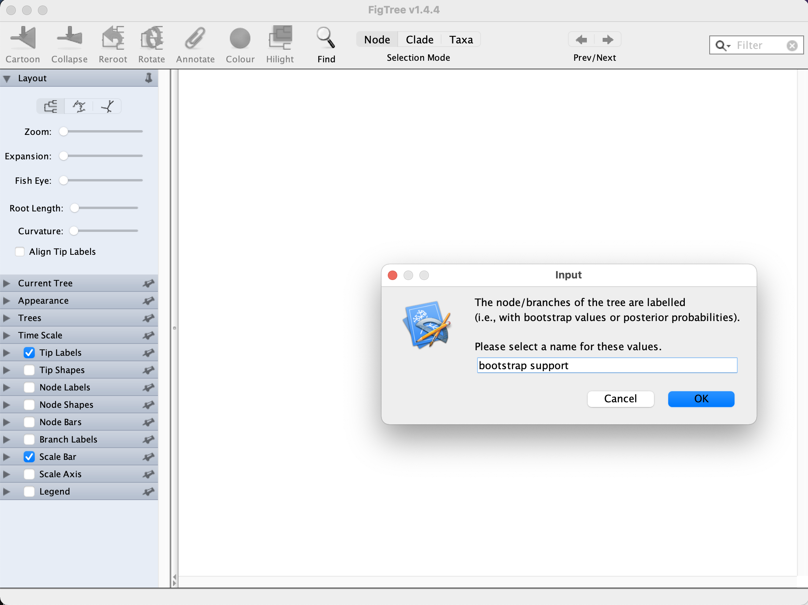
The tree estimated using this model is a substitution tree (branch lengths represent genetic distances in substitutions/site). As for the NJ tree,it is not oriented in time: this is an unrooted tree (displayed with a random root in Figtree). You can reroot the tree in Figtree using Y. pseudotuberculosis as an outgroup, as previously.
Can you confirm the position of our genomes of interest (KZL002, GZL002, CHC004 and VLI092)?
Yes. Just as in the NJ tree, they form a clade which is basal to the rest of the Y. pestis diversity.
Is that placement well-supported? (look at the bootstrap support value: click on the “Node Labels” box and open the drop-down menu, change “Node ages” to “bootstrap support”)
The placement is strongly supported as indicated by a bootstrap support of 100% for this clade (it is not very easy to see, you probably need to zoom in a bit)
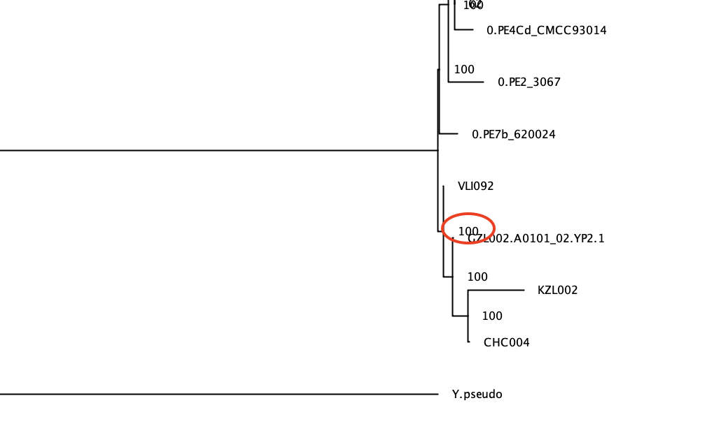
You can notice that the phylogeny is difficult to visualize due to the long branch leading to Y. pseudotuberculosis. Having a very distant outgroup can also have deleterious effects on the estimated phylogeny (due to the so-called “long branch attraction” effect). We can construct a new phylogeny after removing the outgroup:
- go back to the original alignment in mega (that we used for the Neighbour Joining tree), untick Y.pseudotuberculosis, and export in fasta format (“Data” -> “Export Data” -> change “Format” to “Fasta” and click “Ok”; you can save it as: “snpAlignment_without_outgroup.fas”)
- run raxml on this new alignment (change input to “snpAlignment_without_outgroup.fas” and output prefix (
-n) to “without_outgroup” in the command line) - open the bipartition… file in figtree and reroot the tree based on the knowledge we have gained previously: place the root on the branch leading to the prehistoric Y. pestis strains (KZL002, GZL002, CHC004 and VLI092).
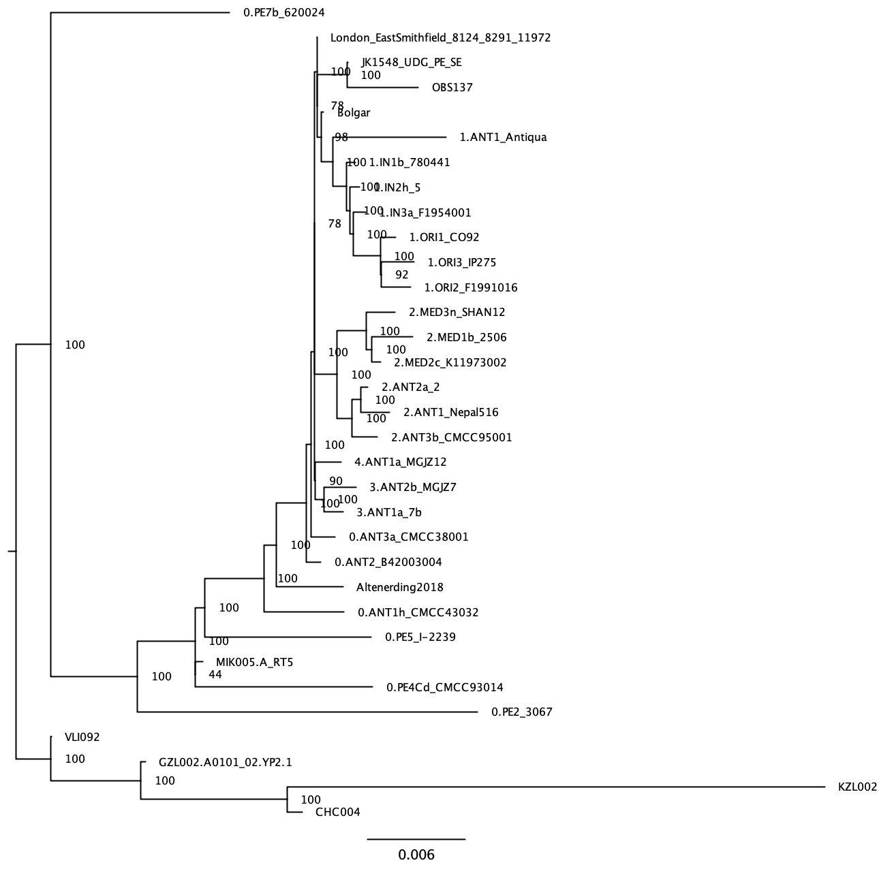
Lastly, we will export the rooted tree from figtree: File -> Export trees -> select the “save as currently displayed” box and save as “ML_tree_rooted.tre” (this will be useful for the section “Temporal signal assessment” at the end of this tutorial)
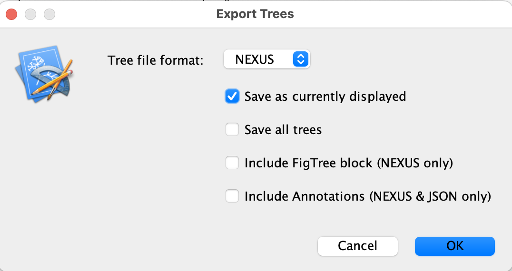
15.6 Estimating a time-tree using Bayesian phylogenetics (BEAST2)
Now, we will try to use reconstruct a phylogeny in which the branch lengths do not represent a number of substitutions but instead represent the time of evolution. To do so, we will use the dates of ancient genomes (C14 dates) to calibrate the tree in time. This assumes a molecular clock hypothesis in which substitutions occur at a rate that is relatively constant in time so that the time of evolution can be estimated based on the number of substitutions.
A great advantage of ancient pathogen genomes is that they provide key calibration points to estimate molecular clocks and dated phylogenies. This is more difficult to do with modern data alone.
We will estimate a time-tree from our alignment using Bayesian inference as implemented in the BEAST2 software. Bayesian inference is based on a probability distribution that is different from the likelihood: the posterior probability. The posterior probability is the probability of the parameters given the data. It is easier to interpret than the likelihood because it directly contains all the information about the parameters: point estimates such as the median or the mean can be directly estimated from it, but also percentile intervals which can be used to measure uncertainty.
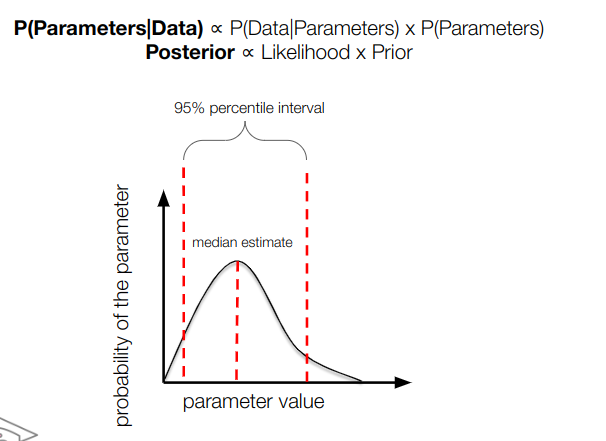
The Bayes theorem tells us that the posterior probability is proportional to the product of the likelihood and the “prior” probability of the parameters:
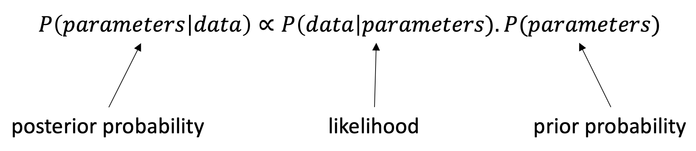
Therefore, for Bayesian inference, we need to complement our probabilistic model with prior distributions for all the parameters. Because we want to estimate a time tree, we also add another parameter: the molecular clock (average substitution rate in time units).
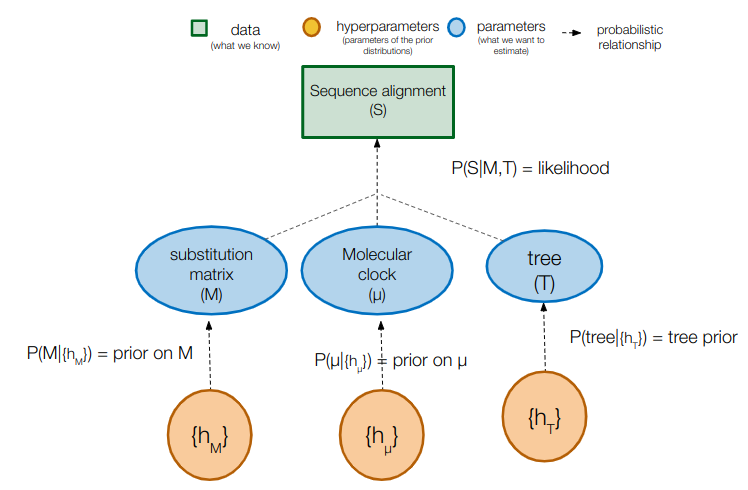
To characterize the full posterior distribution of each parameter, we would need in theory to compute the posterior probability for each possible combination of parameters. This is impossible, and we will instead use an algorithm called Markov chain Monte Carlo (MCMC) to approximate the posterior distribution. The MCMC is an algorithm which iteratively samples values of the parameters from the posterior distribution. Therefore, if the MCMC has run long enough, the (marginal) posterior distribution of the parameters can be approximated by a histogram of the sampled values.
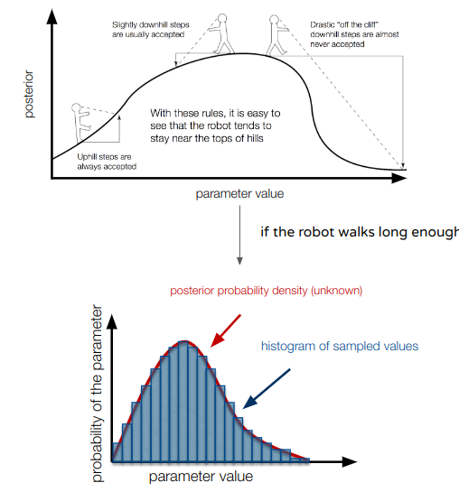
The “taming the beast” website has great tutorials to learn setting a BEAST2 analysis. In particular, the “Introduction to BEAST2”, “Prior selection” and “Time-stamped data” are good starts.
The different components of the BEAST2 analysis can be set up in the program BEAUti:
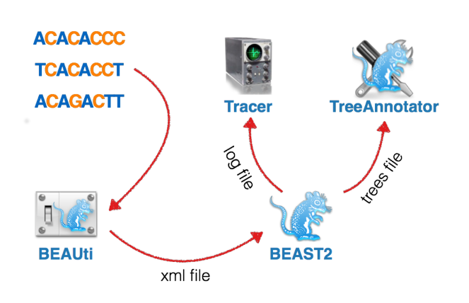
Open BEAUTi by typing beauti & in the terminal (if asked to update, press ‘not now’), and set up an analysis as followed:
- load the alignment without outgroup in the “Partitions” tab (“File” -> “Import alignment”; select “nucleotide”)
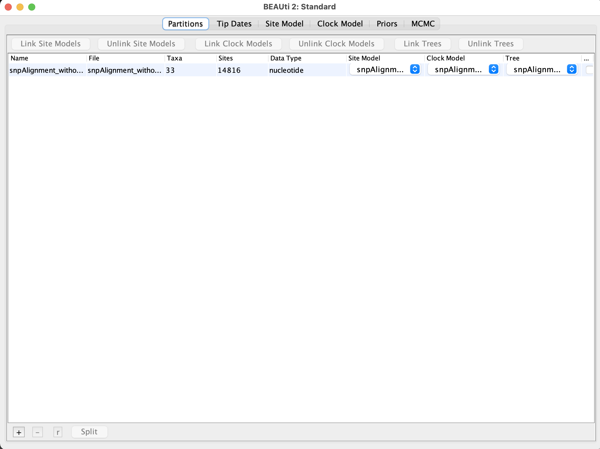
- set the sampling dates in the “Tip dates” tab:
- select “Use tip dates”
- click on “Auto-configure” -> “read from file” and select the
sample_ages.txtfile - change “Since some time in the past” to “Before present”
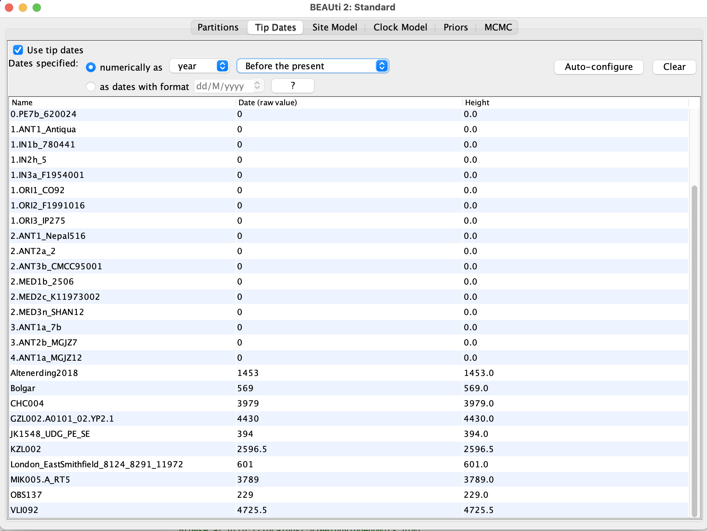
- select the substitution model in the “Site model” tab:
- chose a GTR model
- use 4 Gamma categories for the Gamma site model: this is to account for variations of the substitution rate across sites (site=nucleotide position)
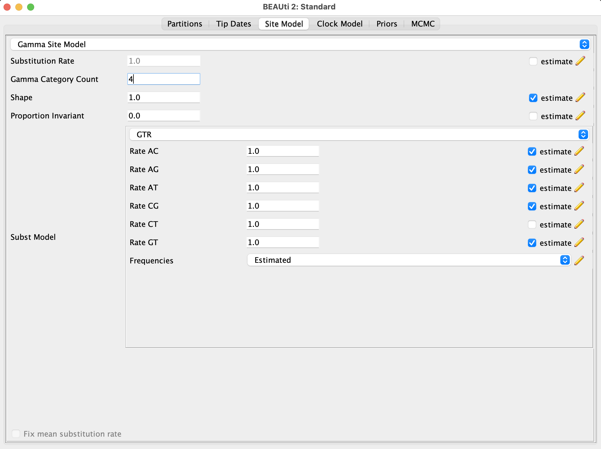
- choose the molecular clock model in the “Clock model” tab:
- use a relaxed clock lognormal model (this is to allow for some variation of the clock rate across branches)
- change the initial value of the clock rate to 10-4 substitution/site/year (10-4 can be written 1E-4)
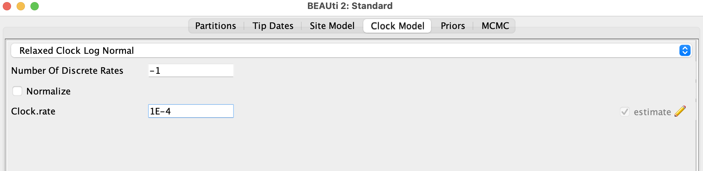
- choose the prior distribution of parameters in the “Priors” tab:
- use a Coalescent Bayesian Skyline tree prior
- change the mean clock prior to a uniform distribution between 1E-6 and 1E-3 subst/site/year
- leave everything else to default
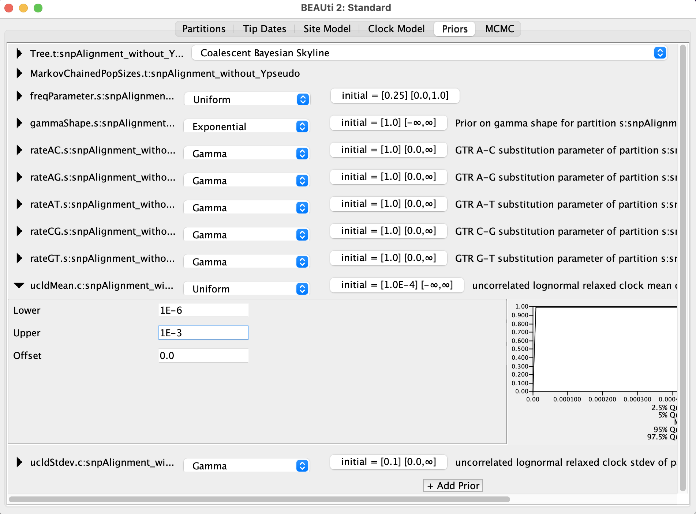
- set up the MCMC in the “MCMC” tab:
- use a chain length of 300M
- sample the mono-dimensional parameters and trees every 10,000 iterations (unfold “tracelog” and “treelog” menus and change “log every” to 10,000)
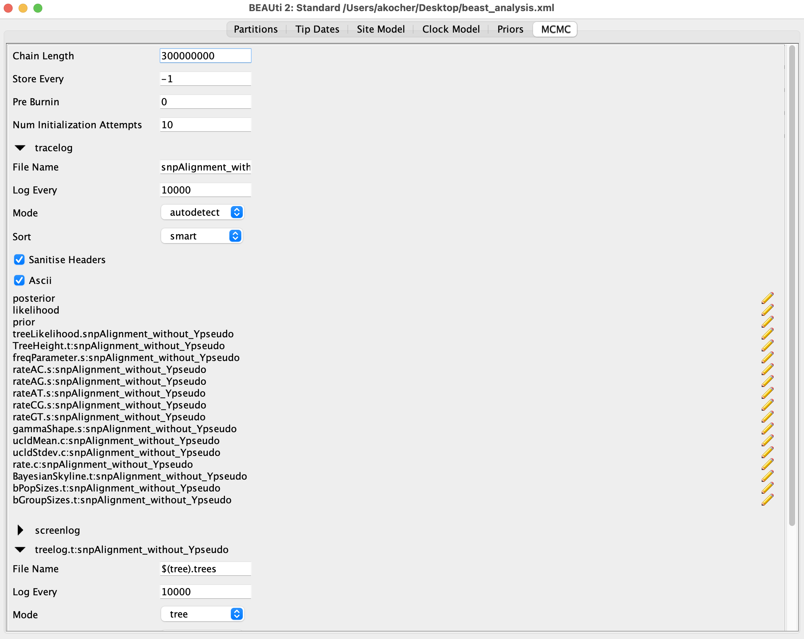
- save the analysis setup as an xml file: “File” -> “Save as”; you can name the file “beast_analysis_Y_pestis.xml”
Now that the analysis is setup, we can run it using BEAST:
beast beast_analysis_Y_pestis.xmlOnce the analysis is running two files should have been created and are continuously updated:
- the “snpAlignment_without_outgroup.log” file which contains the values sampled by the MCMC for various mono-dimensional parameters such as the clock rate, as well as other values that are a logged along the MCMC such as the posterior probability and the likelihood.
- the “snpAlignment_without_outgroup.trees” file which contains the MCMC trees sampled by the MCMC
While the analysis is running, you can start reading the next section!
15.6.1 Assessing BEAST2 results
We are using an MCMC algorithm to sample the posterior distribution of parameters. If the MCMC has run long enough, we can use the sampled parameters to approximate the posterior distribution itself. Therefore, we have to check first that the MCMC chain has run long enough.
We can assess the MCMC sampling using the program Tracer. Tracer can read BEAST log files an generate statistics and plots for each of the sampled parameters. Most importantly, Tracer provides:
- trace plots: show the sampled parameter values along the MCMC run. Trace plots are a very useful MCMC diagnostic tool.
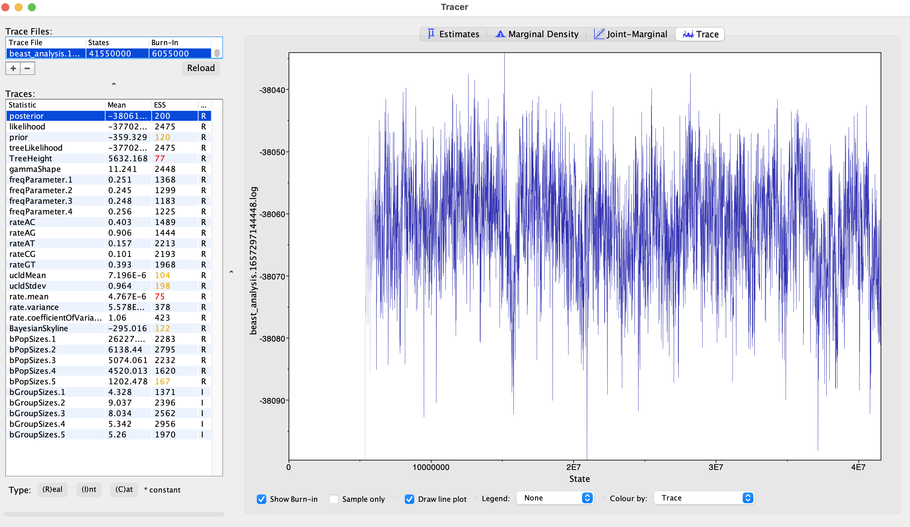
The first thing that one needs to assess is whether the MCMC has passed the so called “burn-in” phase. The MCMC starts with a random set of parameters and will take some time to reach a zone of high posterior probability density. The parameter values that are sampled during this initial phase are usually considered as noise and discarded (by default, tracer discards the first 10% of samples). The burn-in phase can be visualize on trace plots as an initial phase during which the posterior probability of sampled parameters is constantly increasing before reaching a plateau:
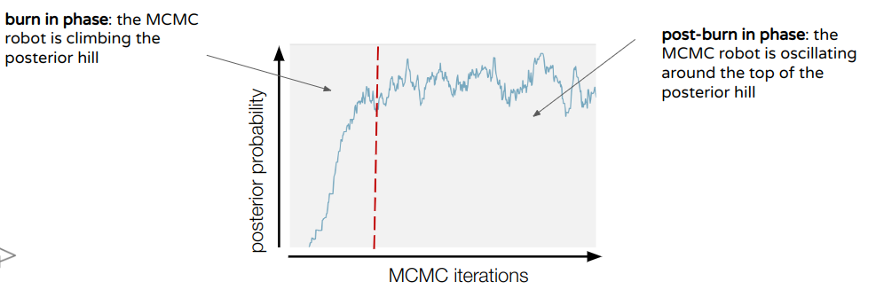
Once the burn-in phase is passed, one can look at the trace plots to assess if the parameters have been sampled correctly and long enough. Usually, when this is the case, the trace should be quite dense and oscillating around a central value (nice trace plots should look like “hairy caterpillars”). In the figure below, the trace on the left doesn’t look good, the one on the right does:
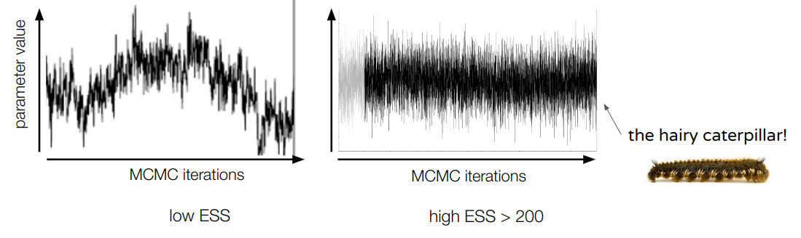
– ESS values: tracer also calculates effective sample sizes (ESS) for each of the sampled parameters. ESSs are estimates of the number of sampled parameter values after correcting for auto-correlation along the MCMC. As a rule of thumb, one usually considers that an MCMC as run long enough if all parameter’s ESS are > 200. Note that if the trace looks like a hairy caterpillar, the corresponding ESS value should be high.
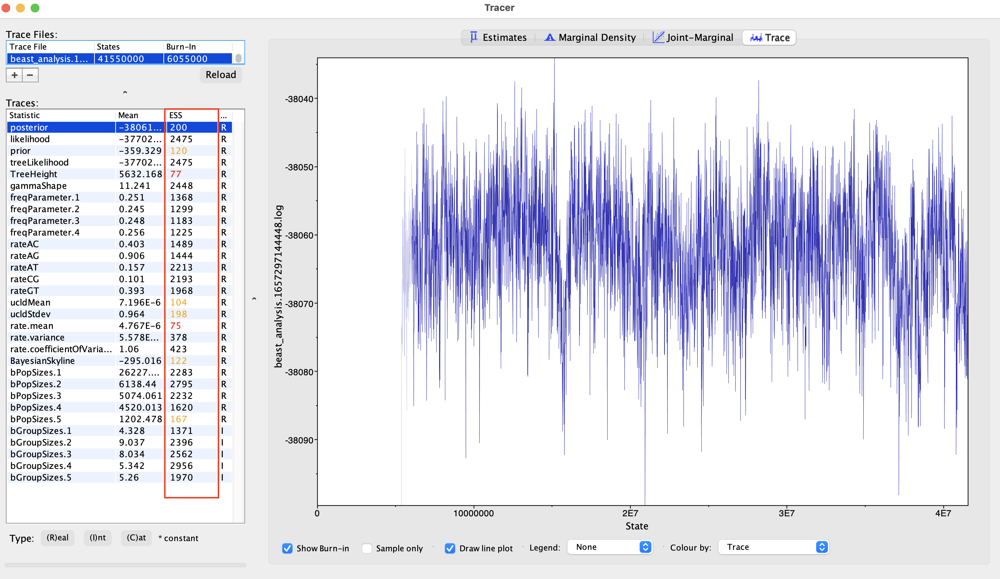
– Parameter estimates: Tracer also provides statistics and plots to explore the posterior distribution of the parameters. These should be considered only if the trace plot and ESS values look fine. In the “Estimates” tab, after selecting the chosen parameter in the left panel, the upper-right panel shows point estimates (mean, median) and measures of uncertainty (95% HPD interval), and the bottom-right panel shows a histogram of the sampled value:
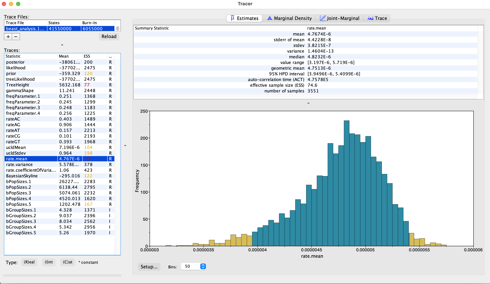
Let’s now load the “snpAlignment_without_outgroup.log” file into Tracer.
While the run is still going, open a new separate terminal, activate the conda environment with conda activate phylogenomics, open tracer with tracer &, and then “File” -> “Import trace file” -> select “snpAlignment_without_outgroup.log”. Note that one can load a BEAST2 log file into tracer even if the analysis is still running. This allows to assess if the MCMC is running correctly or has run long enough before it’s completed.
Has the MCMC run long enough?
You have probably let you analysis run for 10-20 mins before looking at the log file, and this is definitely not sufficient: the burnin phase has recently been passed, the trace plots do not look very dense and ESS values are low. It would probably take a few hours for the analysis to complete. Luckily we have run the analysis in advance and saved the log files for you in the “intermediateFiles” folder: “snpAlignment_without_outgroup.log” and “snpAlignment_without_outgroup.trees”
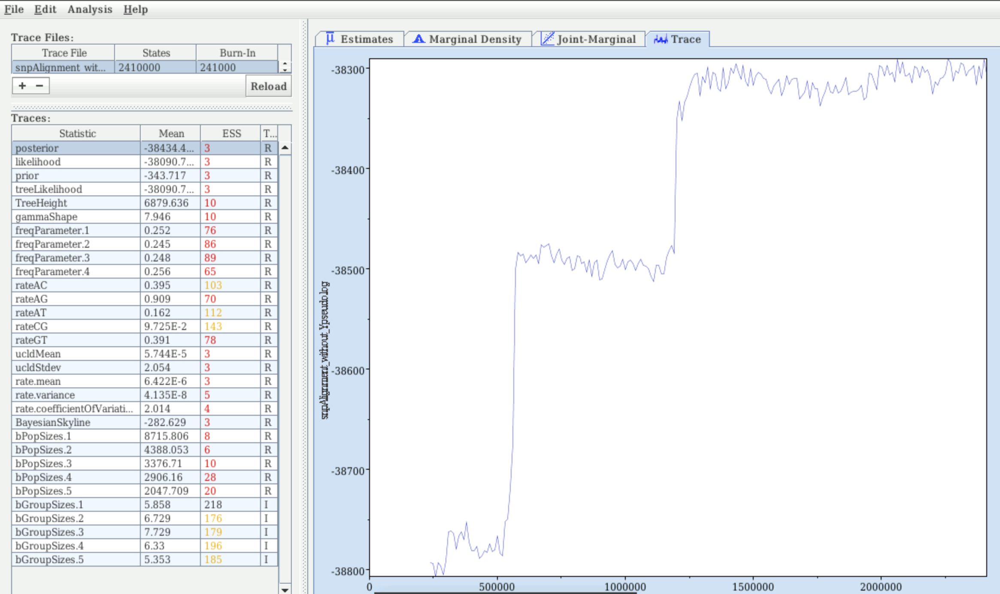
You can now load the “intermediateFiles/snpAlignment_without_outgroup.log” file into Tracer.
Has the MCMC run long enough?
Yes! The trace plots look good and all ESSs are > 200 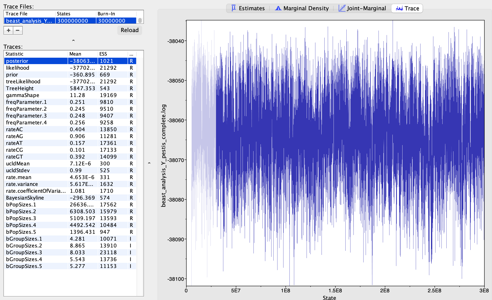
What is your mean estimate of the clock rate (ucld mean)?
~7.10-6 substitution/site/year. Note, however, that this estimate is largely biased since we used a SNP alignment containing only variable positions. In order to get an unbiased estimate of the substitution rate, we should have used the full alignment or account for the number of constant sites by using a “filtered” alignment (see here). In general, this is good practice since not accounting for conserved positions in the alignment can sometimes affect the tree as well (although this should usually be minor, which is why we didn’t bother to do this here).
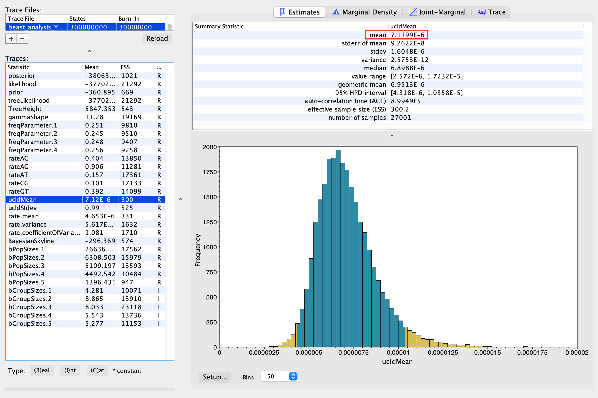
15.6.2 MCC tree
Since we are working in a Bayesian framework, we do not obtain a single phylogenetic tree as with Maximum likelihood, but a large set of trees which should be representative of the posterior distribution. In contrast with mono-dimensional parameters, a tree distribution cannot be easily summarized with mean or median estimates. Instead, we need to use specific tree-summarizing techniques. One of the most popular is the maximum clade credibility (MCC) tree, which works as follow:
- For any node in any of the sampled trees, compute a posterior support: the proportion of trees in the sample which contain the node
- Select the MCC tree: this is the tree in which the product of node posterior supports is the highest
- Calculate node/branch statistics on the MCC tree: typically, the mean/median estimates and HPD interval of node ages are calculated from the full tree sample and annotated on the MCC tree
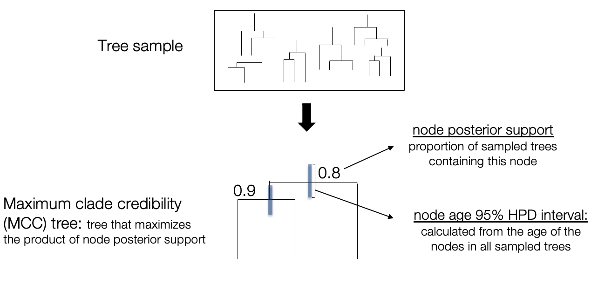
Let’s generate an MCC tree from our tree sample. We can do this using the TreeAnnotator software, which has both a command line and graphical interface. Let’s use the command line here and run the following (using a burn-in of 10%):
treeannotator -burnin 10 intermediateFiles/snpAlignment_without_outgroup.trees snpAlignment_without_outgroup.MCC.treeOnce this is completed, we can open the MCC tree (snpAlignment_without_outgroup.MCC.tree) with figtree. Let’s then add a few elements to the plot:
- Tick the “Scale Axis” box, unfold the corresponding menu, and select “Reverse axis” (now the timescale is in years BP)
- Tick the “Node Labels” box, unfold the corresponding menu, and select “Display: posterior”. The posterior support of each node is now displayed. Note that the support value is a proportion (1=100%)
- Tick the “Node Bars” box, unfold the corresponding menu, and select “Display: height_95%_HPD”. The 95% HPD intervals of node ages are now displayed.
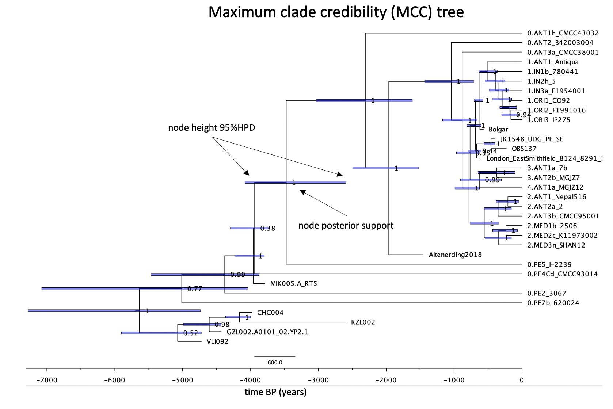
Is the root of the tree consistent with what we found previously?
Yes! The root is placed between our prehistoric strains and the rest of Y. pestis strains. Note that this time we didn’t have to use an outgroup because we estimated a time-tree: the root is identified as the oldest node in the tree.
What is your estimate for the age of the most recent common ancestor of all Y. pestis strains?
~5800 years BP (HPD 95%: ~8000-4500 years BP)
15.6.3 Bonus: Temporal signal assessment
It is a good practice to assess if the genetic sequences that we analyse do indeed behave like molecular clocks before trying to estimate a time tree (i.e. we should have done this before the actual BEAST2 analysis). A classic way to assess the temporal signal of a dataset is the root-to-tip regression. The rationale of the root-to-tip regression is to verify that the oldest a sequence is, the closer it should be to the root in a (rooted) substitution tree because there was less time for substitution to accumulate. In other words, their should be a correlation between sample age and distance to the root, which we can assess using a linear regression (root-to-tip regression). This can be done using the program TempEst:
- open TempEst by typing
tempest &and load the rooted ML tree that we produced previously (you should have saved it as “ML_tree_rooted.tre”) - click on “Import Dates” in the “Sample Dates” tab, select the sample_age.txt file and click “OK”
- still in the “Sample Dates” tab, change “Since some time in the past” to “Before present” (one might need to extend the TempEst window to see the pull down menu)
- look at the “Root-to-tip tab”: is there a positive correlation between time and root-to-tip divergence as expected under the molecular clock hypothesis?
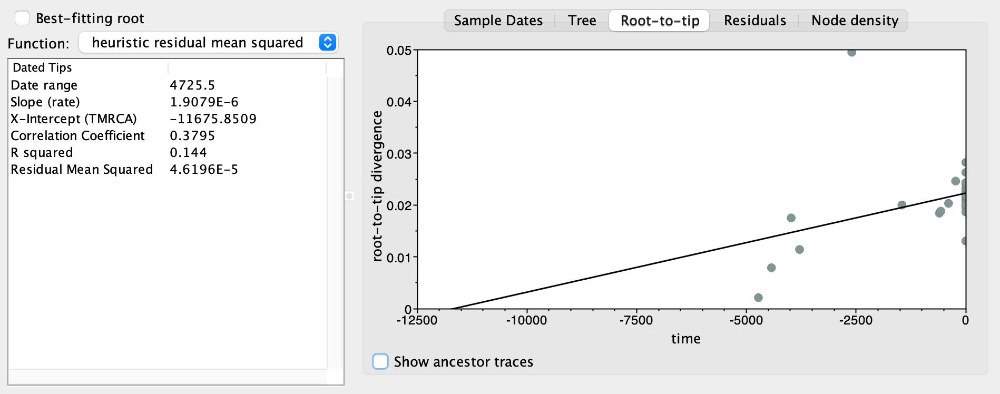
15.7 (Optional) clean-up
Let’s clean up your working directory by removing all the data and output from this chapter.
You can close all windows and any terminals. If you have a terminal with a command still running, just press ctrl + c a couple of times until it drops you to an empty prompt.
Once completed, the command below will remove the /<PATH>/<TO>/phylogenomics directory as well as all of its contents.
Always be VERY careful when using rm -r. Check 3x that the path you are specifying is exactly what you want to delete and nothing more before pressing ENTER!
rm -r /<PATH>/<TO>/phylogenomics*Once deleted you can move elsewhere (e.g. cd ~).
We can also get out of the conda environment with
conda deactivateTo delete the conda environment
conda remove --name phylogenomics --all -y